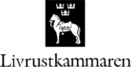

1.319 Wikipedia articles in 85 languages in which images from Category:Images from Livrustkammaren are used, grouped by language
This overview is based on this XML output of the GLAMorous tool d.d. 01-03-2024.
It was generated using the GLAMorousToHTML code.
Also see the documentation of this tool.
This data is also available as an Excel file. More structured data formats (csv, json) will be added in the future.
Available languages
Swedish (362)
English (173)
Polish (72)
German (66)
Russian (66)
Ukrainian (39)
Arabic (29)
French (29)
Spanish (29)
Finnish (28)
Nynorsk (25)
Portuguese (24)
Danish (20)
Italian (20)
Czech (18)
Japanese (18)
Hebrew (15)
Catalan (14)
Dutch (14)
Nynorsk (14)
Persian (13)
Macedonian (12)
Belarusian (11)
Vietnamese (11)
Chinese (10)
Korean (10)
Bulgarian (9)
Hungarian (9)
Eastern Armenian (8)
Turkish (8)
Greek (7)
Standard Estonian (7)
Esperanto (6)
Georgian (6)
Serbian (6)
Afrikaans (5)
Indonesian (5)
Romanian (5)
Slovene (5)
Uzbek (5)
Azerbaijani (4)
Galician (4)
Latvian (4)
Punjabi (4)
South Azerbaijani (4)
Albanian (3)
Aragonese (3)
Bangla (3)
Bashkir (3)
Basque (3)
Chuvash (3)
Croatian (3)
Hindi (3)
Malay (3)
Thai (3)
Cantonese (2)
Irish (2)
Lingua Franca Nova (2)
Lithuanian (2)
Swahili (2)
Urdu (2)
Asturian (1)
Central Bikol (1)
Dagbani (1)
Egyptian Arabic (1)
Hausa (1)
Kashubian (1)
Kazakh (1)
Kurmanji (1)
Latin (1)
Ligurian (1)
Marathi (1)
Occitan (1)
Punjabi (1)
Samogitian (1)
Scottish Gaelic (1)
Sindhi (1)
Tagalog (1)
Tamil (1)
Tatar (1)
Tyap (1)
Welsh (1)
West Frisian (1)
Yiddish (1)
Zulu (1)
Swedish (362)
1700-talets_mode |
Adolf_Fredrik |
Adolf_Fredrik_Munck |
Adolf_Ulrik_Schützercrantz |
Aftonklänning |
Alexander_Ludvig_Soldin |
Allongeperuk |
Ametist |
Amiral |
Andalusier |
Anna_Vasa |
Anton_Blomberg_(fotograf) |
Anton_Ulrik_Berndes |
Applikationsbroderi |
Armband |
Armborst |
Arvfurste |
Arvid_Karlsteen |
Arvid_Virgin |
Augusta_Lundin |
Balett |
Balsamering |
Baner |
Barnvagn |
Basutställning |
Berlinare |
Besoar |
Bett |
Biläger |
Blekinges_landskapsvapen |
Blodsfana |
Bohusläns_landskapsvapen |
Bohusläns_regemente |
Bondetåget |
Bouton |
Brigitta_Scherzenfeldt |
Broderi |
Brudklänning |
Brännjärn |
Brännmärkning |
Bröllopet_mellan_Gustav_III_och_Sofia_Magdalena |
Bröllopet_mellan_Gustav_II_Adolf_och_Maria_Eleonora |
Bröllopet_mellan_Karl_X_Gustav_och_Hedvig_Eleonora |
Byxor |
Bärstol |
Cape |
Carl_Fredrik_Kiörboe |
Carl_Gustaf_Fehrman |
Caspar_Christian_Liendenberg |
Caspar_Kohl |
Conrad_Reinhold_Åkerhielm |
Cykel |
Dagerrotypi |
Dalarnas_landskapsvapen |
Dalpil |
Dalslands_historia |
Dalslands_landskapsvapen |
Dalupproret_1743 |
Daniel_Marot |
Dannebrogorden |
David_Casparsson_Kohl |
David_Klöcker_Ehrenstrahl |
Diadem |
Distinktionstecknet_för_tapperhet_till_sjöss |
Doktorshatt |
Dolk |
Dopklänning |
Drottning_Desideria |
Drottning_Kristina |
Drottning_Sophias_förening_till_understödjande_av_härens_och_flottans_sjukvård |
Drottningens_livregemente_till_fot |
Dödsmask |
Egentliga_Finlands_landskapsvapen |
Egentliga_Tavastlands_landskapsvapen |
Elddon |
Emalj |
Erik_XIV |
Europeisk_stör |
Faskinkniv |
Finland |
Finlands_Vita_Ros’_orden |
Flintlåspistol |
Florett |
Foder_(textil) |
Frack |
Fredrik_Adolf,_hertig_av_Östergötland |
Fredrik_I |
Fredrika_av_Baden |
Furste |
För_tapperhet_i_fält |
Garnisonsregementet_i_Göteborg |
Garpströms_bruk |
Georg_Carl_von_Döbeln |
Gotlands_landskapsvapen |
Groteskornamentik |
Gustaf_V |
Gustav_Adolfsbakelse |
Gustav_III |
Gustav_III:s_kröning |
Gustav_III:s_statskupp |
Gustav_III_(staty) |
Gustav_II_Adolf |
Gustav_IV_Adolf |
Gustav_Vasa |
Gustav_Vasas_hjälm |
Gustav_Vasas_hjälm_med_maskvisir |
Gustaviansk_stil |
Gustavianska_donationen |
Gästriklands_landskapsvapen |
Haile_Selassie |
Hallands_landskapsvapen |
Handskar |
Harts |
Hedvig_Eleonora_av_Holstein-Gottorp |
Hedvig_Elisabet_Charlotta_av_Holstein-Gottorp |
Hermelin |
Hirschfängare |
Hovdam |
Hovdräkt |
Hovfröken |
Hovfurir |
Hovjägmästare |
Hovleverantör |
Hovstallmästare |
Huvudbonad |
Hälsinglands_landskapsvapen |
Härold |
Hårpiska |
Ispik |
Ivan_IV_av_Ryssland |
Jakthorn |
Jean_Bérain_den_äldre |
Jehovaorden |
Jesu_namns_orden |
Johan_Henrik_Kröger |
Johan_III |
Johan_Kasimir_av_Pfalz-Zweibrücken |
Johan_Pasch |
Johan_Ture_Bielke |
Josefina_av_Leuchtenberg |
Julius_Kronberg |
Jämtlands_landskapsvapen |
Järnkorset |
Kajana_jägarbataljon |
Kalesch |
Kalmucker |
Kamlott |
Karelska_dragonkåren |
Karl_IX |
Karl_Johansmedaljen |
Karl_XI |
Karl_XI:s_kröning |
Karl_XII |
Karl_XII:s_fickur |
Karl_XII:s_norska_fälttåg |
Karl_XII:s_ritt_från_Pitești_till_Stralsund |
Karl_XII_i_kulturen |
Karl_XIV_Johan |
Karl_XV |
Karl_X_Gustav |
Karneol |
Karoliner |
Karusell_(tornerspel) |
Kask |
Kastmynt |
Katarina_Karlsdotter_Vasa |
Kläde |
Koger |
Kolichmarde |
Kollett |
Kommandostav |
Kommissvärja_m/1685 |
Konservering_(kulturarv) |
Konungens_jaktklubb |
Korsett |
Kragstövel |
Krigsbyte |
Kritstrecksrandig |
Krona_(huvudprydnad) |
Kungl._Maj:ts_Orden |
Kunglig_Majestäts_drabanter |
Kunglig_Majestäts_kansli |
Kungliga_minnestecken |
Kunz_Lochner |
Kupé_(hästvagn) |
Kyller |
Lackskor |
Landå |
Lapplands_landskapsvapen_(Sverige) |
Lars_Bolander |
Lejon |
Lista_över_mottagare_av_Serafimerorden |
Livdragonregementet_(1700–1721) |
Livfana |
Livmedikus |
Livrustkammaren |
Longering |
Louise_Mountbatten |
Lovisa_Ulrika_av_Preussen |
Lovisa_av_Nederländerna |
Lärft |
Magnus_Brahe_(1790–1844) |
Maja_Gunn |
Maria_Eleonora_av_Brandenburg |
Medelpads_landskapsvapen |
Mode |
Mongoliet |
Mordet_på_Gustav_III |
Muff |
Märthaskolan |
Mässing |
Mössa_m/1923 |
Napoleon_I |
Nationella_dräkten |
Neptuniorden |
Nordiska_tjugofemårskriget |
Nordstjärnan_(symbol) |
Nordstjärneorden |
Norge |
Norra_Karelens_landskapsvapen |
Norra_Savolax_landskapsvapen |
Norra_Österbottens_landskapsvapen |
Norska_Lejonorden |
Nylands_landskapsvapen |
Närke |
Närke-Värmlands_regemente |
Närkes_landskapsvapen |
Omlott |
Onyx |
Oscar_I |
Oscar_II |
Pandora_(docka) |
Paniers |
Pansar |
Philip_von_Krusenstiern |
Pilbåge |
Pipkrage |
Pompong |
Pontus_von_Rosen |
Pärlemor |
Pärlstickare |
Rakkniv |
Revolver |
Riddare_med_stora_korset_av_Svärdsorden |
Riksdagen_1792 |
Riksdagens_högtidliga_öppnande |
Rikshärold |
Riksrådsdräkt |
Riksäpple |
Ringkrage |
Robe_de_cour |
Robe_à_la_française |
Rokoko |
Rubin |
Rustkammare |
Rustning |
Rålamb |
Röda_örns_orden |
Sabel |
Sachsiska_infanteriregementet |
Salutering_i_Sverige |
Sammet |
Sankt_Olavs_orden |
Satakundas_landskapsvapen |
Scouting |
Serafimerbaneret |
Serafimerorden |
Sforza |
Sigill |
Skjorta |
Skjortbröst |
Sko |
Skridskor |
Skygglapp |
Skärgårdsflottan |
Skåne |
Skånes_historia |
Skånes_landskapsvapen |
Skånska_ståndsdragonerna |
Skånska_ståndsdragonregementet |
Slaget_vid_Dirschau |
Slaget_vid_Lode |
Slaget_vid_Lund |
Slaget_vid_Lützen |
Slaget_vid_Mohács_(1526) |
Slaget_vid_Narva |
Slaget_vid_Svensksund |
Smycke |
Smålands_landskapsvapen |
Sofia_Albertina_av_Sverige |
Sofia_Magdalena_av_Danmark |
Sofia_av_Nassau |
Solfjädersorden |
Sorgtecken |
Stigbygel |
Stormaktstiden |
Streiff |
Stridsyxa |
Strumpebandsorden |
Strumpor |
Strängnäs_domkyrka |
Studentsången |
Stövlar |
Svarta_örns_orden_(Preussen) |
Svenska_Estland |
Svenska_Kennelklubben |
Svenska_Sankt_Barthélemy |
Svenska_arméns_gradbeteckningar |
Svenska_begravningsregalier |
Svenska_kröningsmantlar |
Svenska_kungliga_dop |
Svenska_kungliga_födslar |
Svenska_militära_uniformer |
Svensksundsmedaljen |
Sverige |
Sverige_i_olympiska_sommarspelen_1936 |
Sveriges_riksbaner |
Sveriges_riksregalier |
Sveriges_riksvapen |
Svärd |
Svärdsorden |
Säng |
Södermanlands_landskapsvapen |
Tre_Kronor_(byggnad) |
Tredagarsslaget_vid_Warszawa |
Trepanation |
Tretorn |
Tritoner |
Tårta |
Tåskor |
Ulrika_Eleonora |
Ulrika_Eleonora_av_Danmark |
Underrede |
Upplands_landskapsvapen |
Upplands_ståndsdragonregemente |
Vagga |
Vasamedaljen |
Vasaorden |
Victoria_av_Baden |
Vilhelm_II_av_Tyskland |
Vira_bruk |
Visir |
Väggbonad |
Värja |
Värmlands_landskapsvapen |
Västerbottens_landskapsvapen |
Västergötlands_landskapsvapen |
Västmanlands_landskapsvapen |
Våg_(instrument) |
Ytterrock |
Ägiljett |
Änkedrottningens_livregemente |
Åbo,_Nylands_och_Viborgs_tremänningsregemente_till_häst |
Åbo_läns_infanteriregemente |
Ålands_landskapsvapen |
Ångermanlands_landskapsvapen |
Étienne_Delaune |
Ölands_landskapsvapen |
Örhängen |
Örngott |
Österbottens_infanteriregemente |
Östergötlands_landskapsvapen
English (173)
1562_in_Sweden |
1600–1650_in_Western_fashion |
1636_in_Sweden |
1650–1700_in_Western_fashion |
1690_in_Sweden |
1720_in_Sweden |
1744_in_Sweden |
1747_in_Sweden |
1750–1775_in_Western_fashion |
1751_in_Sweden |
1766_in_Sweden |
1775–1795_in_Western_fashion |
17th_century |
1820s_in_Western_fashion |
1830s_in_Western_fashion |
1862_in_Sweden |
1870s_in_Western_fashion |
1908_in_Sweden |
Admiral_(Sweden) |
Aiguillette |
Anointing |
Archduke_Maximilian_Ernest_of_Austria |
Aristocracy_of_Norway |
Armour |
Arvid_Karlsteen |
Augusta_Lundin |
Axel_Oxenstierna |
Barouche |
Battle_of_Bronkhorstspruit |
Battle_of_Lund |
Berlin_(carriage) |
Besagew |
Bezoar |
Birmingham_Small_Arms_Company |
Box |
Brigitta_Scherzenfeldt |
Broadcloth |
Buff_coat |
Casimir_Lefaucheux |
Catherine_of_Sweden,_Countess_Palatine_of_Kleeburg |
Charles_IX_of_Sweden |
Charles_XII_of_Sweden |
Charles_XI_of_Sweden |
Charles_XV |
Christening_cap |
Christina,_Queen_of_Sweden |
Coat_of_arms_of_Finland |
Coat_of_arms_of_Uppland |
Coat_of_arms_of_Åland |
Collar_(order) |
Court_shoe |
Crown_Equerry_(Sweden) |
Crêpe_(textile) |
Cultural_depictions_of_lions |
Doublet_(clothing) |
Drabant_Corps_of_Charles_XII |
Dress |
Dressing_gown |
Elmslie_typology |
Falconry |
Fashion_doll |
Finland_under_Swedish_rule |
Francotte |
Georgette_(fabric) |
Glitter |
Gorget |
Gustaf_V |
Gustaf_VI_Adolf |
Gustav_III |
Gustavus_Adolphus |
Gustavus_Adolphus_pastry |
Gyrfalcon |
Harlequin_print |
Hats_(party) |
Hedvig_Elisabeth_Charlotte_of_Holstein-Gottorp |
Hedwig_Eleonora_of_Holstein-Gottorp |
History_of_Sweden |
House_of_Vasa |
Hovjägmästare |
Hör_klockorna_med_ängsligt_dån |
Jewellery_chain |
Jewels_of_the_Swedish_royal_family |
Julius_Kronberg |
Kaftan |
Kalthoff_repeater |
Karabela |
Kitten_heel |
Kunz_Lochner |
Lion_(heraldry) |
List_of_Japanese_military_equipment_of_World_War_II |
List_of_equipment_of_the_United_States_Army_during_World_War_II |
List_of_highest_civilian_awards_by_country |
List_of_last_words_(18th_century) |
List_of_medieval_armour_components |
List_of_oldest_surviving_ships |
List_of_princesses_of_Sweden |
List_of_shotguns |
Livestock_branding |
Livrustkammaren |
Marriage |
Military_of_Afsharid_Iran |
Miquelet_lock |
Nationella_dräkten |
Norwegian_battle_axe |
Order_of_St._Olav |
Order_of_the_Black_Eagle |
Order_of_the_Garter |
Order_of_the_Norwegian_Lion |
Order_of_the_Seal_of_Solomon |
Order_of_the_Seraphim |
Order_of_the_Sword |
Orders,_decorations,_and_medals_of_Norway |
Ordre_de_l'Harmonie |
Pakubuwono_X |
Pannier_(clothing) |
Partisan_(weapon) |
Patent_leather |
Peasant_armament_support_march |
Peep-toe_shoe |
Pepper-box |
Plate_armour |
Polish–Lithuanian_Commonwealth |
Princess_Margaret_of_Connaught |
Princess_Patricia_of_Connaught |
Quiver |
Regalia |
Regalia_of_Sweden |
Regency_of_Algiers |
Repeating_firearm |
Ring_(jewellery) |
Robe_de_cour |
Rocking_horse |
Rondel_(armour) |
Round_shield |
Royal_Scots_Greys |
Ruff_(clothing) |
Saint_Barthélemy |
Sakkos |
Scarlet_tanager |
Scimitar |
Shamshir |
Shotgun |
Sjögren_shotgun |
Sleeve |
Small_sword |
Sorocaban_knife |
Spur |
Still_life |
Swedish_colony_of_Saint_Barthélemy |
Swedish_coronation_robes |
Swedish_overseas_colonies |
Swedish_royal_baptisms |
Swedish_slave_trade |
Sword |
Toilet_service |
Train_(clothing) |
Trumpet |
Turko-Mongol_sabers |
Tweed |
Ulrika_Eleonora_of_Denmark |
Vadstena_adliga_jungfrustift |
Vasa_Medal |
Vendetta_knife |
Wedding_dress |
Wedding_of_Carl_XVI_Gustaf_and_Silvia_Sommerlath |
Wedding_of_Frederik,_Crown_Prince_of_Denmark,_and_Princess_Ingrid_of_Sweden |
Wedding_of_Gustav,_Crown_Prince_of_Sweden,_and_Sophia_Magdalena |
Wedding_of_Gustav_II_Adolf_and_Maria_Eleonora |
Wedding_photography |
Wide-leg_jeans |
Winchester_Model_1897 |
Wrap_dress |
Żukowo
Polish (72)
Anna_Wazówna |
Arbalet |
Arkebuz |
Arkebuzeria |
Berlina |
Bigwanty |
Botforty |
Brokat_(tkanina) |
Broń_kolna |
Broń_miotająca |
Broń_obuchowa |
Broń_ćwiczebna |
Dubeltówka |
Espadon_(broń) |
Flaga_Krakowa |
Floret |
Frak |
Głowica_(broń_biała) |
Hakownica |
Kalesony |
Kalesza |
Karabela |
Karabin |
Karabin_jednostrzałowy |
Karwasz |
Kat |
Kordelas |
Kosa_bojowa |
Kryza_(ubiór) |
Kusza |
Miecz_katowski |
Mundur |
Mundur_wojskowy |
Naczółek_(zbroja_końska) |
Nakarczek_(zbroja_końska) |
Napierśnik_(zbroja) |
Napierśnik_(zbroja_końska) |
Naplecznik |
Nazadnik |
Obcas |
Obojczyk_(zbroja) |
Obłęk_(broń_biała) |
Order_Lwa_Norweskiego |
Order_Pahlawiego |
Ostroga_(jeździectwo) |
Panewka_(broń_palna) |
Petrynał |
Piechota_wybraniecka |
Piętno_(zwierzęta) |
Prochownica |
Punta |
Rapier |
Regiment_(oznaka) |
Rewolwer |
Rynsztunek |
Rękawica_(zbroja) |
Spódnica_midi |
Strzelba |
Strzelba_Winchester_Model_1897 |
Szabla_ormiańska |
Szabla_polska |
Szamszir |
Szpada |
Tarczka_opachowa |
Taszka_(zbroja) |
Wstęga_Trzech_Orderów |
Zamek_kołowy |
Zbrocze |
Zbroja |
Zbroja_końska |
Zbroja_płytowa |
Östgöta_kavalleriregemente
German (66)
Abzug_(Waffe) |
Armbrust |
Armbrustschützengesellschaft_in_Weimar |
Armbrustspanner_(Waffentechnik) |
Augusta_Lundin |
Axt |
Blatt_(Werkzeug) |
Chopine |
Eberhard_Diedrich_Taube_von_Odenkat |
Elchfell |
Flagge_Gotlands |
Flugunfall_der_KLM_bei_Kopenhagen_1947 |
Friedrich_Jacob_Boßler |
Gottfried_Leygebe |
Gustav_II._Adolf |
Guy_Laroche |
Halskette |
Handbohrmaschine |
Hirschfänger |
Hochzeitsfotografie |
Karabela_(Säbel) |
Kleidermode_zur_Zeit_des_Dreißigjährigen_Krieges |
Koller_(Uniform) |
Krusenstiern_(Adelsgeschlecht) |
Königlicher_Seraphinenorden |
Lederkanone |
Liste_Eiserner_Hände |
Liste_der_Biografien/Lar |
Liste_von_Messern_in_der_Lebensmittelerzeugung |
Liste_von_Revolvern |
Livrustkammaren |
Louise_Mountbatten |
Malteserkreuz |
Manschettenknopf |
Mitra |
Musketengabel |
Orden_Carol_I. |
Orden_der_Württembergischen_Krone |
Orden_des_Regierenden_Hauses |
Orden_des_norwegischen_Löwen |
Orden_vom_Siegel_Salomons |
Orientalische_Rossstirn |
Partisane |
Philipp_Crusius |
Pistole |
Pumps |
Russischer_Narvafeldzug_1700 |
Rückenklinge |
Schwanzschraube |
Schwebescheiben |
Schwedenschimmel |
Shamshir |
Sibylla_von_Sachsen-Coburg_und_Gotha |
Smith_&_Wesson |
Spornleder |
Stehkragen |
Steinschloss |
Stephanos_(Bischofskrone) |
Sticharion |
Streiff_(Pferd) |
Sänfte |
Taufkleid |
Wappen_Finnlands |
Wappenstein |
Was_ist_Autorität? |
Wickelkleid
Russian (66)
Husqvarna_AB |
Winchester_Model_1897 |
Ампир |
Армия_Густава_II_Адольфа |
Боевой_молот |
Болт_(оружие) |
Военная_система_династии_Афшаридов |
Воротник |
Гаковница |
Герб_Карелии |
Герб_Сконе |
Голландско-шведский_меч |
Государственный_переворот_Густава_III |
Густав_III |
Закрытый_шлем |
Западноевропейская_мода_1600–1650_годов |
История_Швеции |
Камлот |
Карл_IX_(король_Швеции) |
Кафтан |
Клевец |
Колесцовый_замок |
Кольцо_(украшение) |
Кольчужная_рубашка |
Король_Норвегии |
Корона |
Корсет |
Косоворотка |
Кристина_(королева_Швеции) |
Кронберг,_Юлиус |
Крузенштерн,_Иван_Фёдорович |
Крузенштерна,_Филипп |
Лошадь-качалка |
Маршальский_жезл |
Орден |
Орден_Белой_розы_Финляндии |
Орден_Заслуг_(Венгрия) |
Орден_Заслуг_(Чили) |
Орден_Звезды_Карагеоргия |
Орден_Иеговы |
Орден_Кароля_I |
Орден_Меча |
Орден_Мухаммеда_Али |
Орден_Норвежского_льва |
Ордена_Пруссии |
Пандора_(кукла) |
Погоны |
Предохранитель_(часть_оружия) |
Пуанты |
Револьвер |
Свадебное_платье |
Секира |
Скимитар |
Список_револьверов |
Спусковой_крючок |
Сукно |
Тарч_(европейский_щит) |
Терцероль |
Тессин,_Ульрика |
Феррара,_Андреа_(оружейник) |
Чечуга |
Чопины |
Шамшир |
Шелом |
Шпага |
Шпага_с_гнутым_эфесом
Ukrainian (39)
Єгова |
Анна_Вазівна |
Арбалет |
Балістер |
Вірменська_шабля |
Гаківниця |
Герб_Аландських_островів |
Домаха_(шабля) |
Дюссельдорфська_художня_школа |
Західноєвропейське_вбрання_(1600–1650) |
Зерцала |
Канцелярія_(державна_установа_в_Швеції) |
Карабеля |
Карл_XII |
Кармазин |
Килидж_(шабля) |
Коронація_в_Швеції |
Креп-жоржет |
Кречет |
Кінь-гойдалка |
Орден_Норвезького_лева |
Орден_Печатки_Соломона |
Орден_Чорного_орла |
Орден_Ягве |
Острога |
Помазання_(ритуал) |
Протазан |
Підбор |
Пістолет_Макарова |
Револьвер |
Сибілла_Саксен-Кобург-Готська |
Список_озброєння_запорізьких_козаків |
Стремено |
Тетраграматон |
Філіп_Крузенштерн |
Хіршфангер |
Чечуга_(шабля) |
Чинкуеда |
Шамшир
Arabic (29)
أسد_(درعيات) |
ألعاب_العرب |
الرموز_الوطنية_لباكستان |
المتحف_الحربي_السويدي |
بازهر |
برلينية |
بروشة |
تنورة_موسعة |
جاموسية_(سترة) |
جعبة_(سهام) |
جورجيت_(نسيج) |
خملة |
سنقر |
سيف_مغولي_تركي |
شبرية |
شركة_برمنغهام_للأسلحة_الصغيرة |
شعار_أولاند |
شمشير_(سيف) |
طبيب_حياة |
فستان_ملفوف |
قفطان_جزائري |
قوس_إفرنجية |
كارل_الخامس_عشر |
مبذل |
مخرمة_الإبرة |
مخمل |
ميسم_(أداة) |
نيشان_خاتم_سليمان |
نيشان_فرسان_العقاب_الأسود
French (29)
Amadou_(matière) |
Armée_du_Nord_(Bernadotte) |
Artisanat_algérien |
Bézoard |
Caftan |
Caftan_algérien |
Christine_(reine_de_Suède) |
Collier_(animal_de_compagnie) |
Corset |
Cuissarde |
Dentelle_à_l'aiguille |
Forces_militaires_de_la_dynastie_Afsharid_d'Iran |
Gustave_III |
Histoire_de_la_Suède |
Jean_Victor_Marie_Moreau |
Nagant |
Ordre_des_Séraphins |
Ordre_du_Lion_norvégien |
Ordre_du_Mérite_du_Chili |
Ordre_du_Sceau_de_Salomon |
Pantoufle |
Pertuisane |
Photographie_de_mariage |
Pince |
Plate_(armure) |
Pourpoint |
Quand_Biron_voulut_danser |
Rinceau |
Sauer_&_Sohn
Spanish (29)
17_de_abril |
Birmingham_Small_Arms_Company |
Bombacho |
Botas_de_montar |
Brigitta_Scherzenfeldt |
Camelote |
Cola_(ropa) |
David_Klöcker_Ehrenstrahl |
Destrero |
Escenificación_del_poder_político |
Escopeta_Sjögren |
Escudo_de_Suecia |
Espada |
Federico_I_de_Suecia |
Gustavo_I_de_Suecia |
Matrimonio |
Orden_de_Luisa_Ulrica |
Orden_de_Vasa |
Orden_de_los_Serafines |
Orden_del_Sello_de_Salomón |
Orden_del_Águila_Negra |
Orden_militar |
Partesana |
Pichel |
San_Bartolomé_(Francia) |
Shamsir |
Sibila_de_Sajonia-Coburgo_y_Gotha |
Vaina |
Velarte
Finnish (28)
Ahvenanmaan_vaakuna |
Dirschaun_taistelu |
Etelä-Savon_vaakuna |
Gävlen_valtiopäivät |
Haarniska |
Hakaristi_Suomessa |
Hattupuolue |
Johan_Fleming |
Kanta-Hämeen_vaakuna |
Kastemekko |
Kolmikolkkahattu |
Kylteri_(vaate) |
Leivos |
Louise_(Ruotsin_kuningatar) |
Mustan_kotkan_ritarikunta |
Pohjois-Karjalan_vaakuna |
Pohjois-Pohjanmaan_vaakuna |
Pohjois-Savon_vaakuna |
Pyhän_Olavin_ritarikunta |
Salomon_sinetin_ritarikunta |
Sametti |
Satakunnan_vaakuna |
Strängnäsin_tuomiokirkko |
Suomen_vaakuna |
Svenska_Kennelklubben |
Uudenmaan_vaakuna |
Vaatemuoti_länsimaissa_1830-luvulla |
Varsinais-Suomen_vaakuna
Nynorsk (25)
Birgitta_Scherzenfeldt |
Bondeøks |
Budstikke |
Den_Norske_Løve_(orden) |
Den_wendiske_krones_husorden |
Fløyel |
Gallauniform |
Jehovaordenen |
Josefine_av_Norge_og_Sverige |
Køllert |
Mansjettknapp |
Mathias_Sommerhielm |
Märthaskolen_(Sverige) |
Pahlaviordenen |
Riksbanner |
Rødliste_for_husflidsteknikker |
Salomos_segls_orden |
Serafimerordenen |
Shamshir |
Signet |
Sikring_(skytevåpen) |
Skånegriffen |
Smykke |
Understell |
Winchester_Model_1897
Portuguese (24)
1862_na_Suécia |
Arma_de_repetição |
Armadura_de_placas |
Caixa |
Carrinho_de_bebê |
Catarina_da_Suécia |
Caçadeira |
Chave_de_roda |
Eley_Brothers |
Faca_Sorocabana |
Gustavo_VI_Adolfo_da_Suécia |
Guy_Laroche |
Kontusz |
Livrustkammaren |
Moda_entre_os_anos_de_1750_e_1795 |
Moda_na_década_de_1820 |
Ordem_do_Leão_da_Noruega |
Partasana |
Pintura_na_Suécia |
Repetidora_Kalthoff |
República_das_Duas_Nações |
Revólver |
Veludo |
Vestido_de_casamento
Danish (20)
Brudekjole |
De_danske_Vaabenbrødre |
Den_Norske_Løve_(orden) |
Den_wendiske_krones_husorden |
Fløjl |
Forladegevær |
Gotland |
Gotlands_våben |
Gustav_3._af_Sverige |
Gustav_4._Adolf_af_Sverige |
Kalmukker |
Kancellikollegiet_i_Sverige |
Karl_11._af_Sverige |
Livrustkammaren |
Oscar_1._af_Sverige |
Ponyvogn |
Revolver |
Skånegriffen |
Slaget_ved_Koluvere |
Sophie_Magdalene_af_Danmark
Italian (20)
Battaglia_di_Lund |
Bezoario |
Caffettano |
Cappello_dottorale |
Colonia_svedese_di_Saint_Barthélemy |
Confederazione_polacco-lituana |
Désirée_Clary |
Federico_I_di_Svezia |
Fotografia_di_matrimonio |
Gustavo_Adolfo_di_Svezia_(1906-1947) |
Nationella_dräkten |
Ordine_dei_Santi_Maurizio_e_Lazzaro |
Ordine_del_Leone_di_Norvegia |
Ordine_del_Sigillo_di_Salomone |
Oscar_I_di_Svezia |
Partigiana_(arma) |
Saint-Barthélemy_(collettività_d'oltremare) |
Sciabole_turco-mongole |
Sjögren_(fucile) |
Storia_della_moda_1600-1650
Czech (18)
Anton_Blomberg_(fotograf) |
Anton_Vincenz_Lebeda |
Eleonora_Kateřina_Falcká |
Kazimír_Falcko-Zweibrückenský |
Luk |
Náhrdelník |
Podřízník |
Seznam_knížecích_nobilitací_Rakouského_císařství |
Svatba_Karla_XVI._Gustava_a_Silvie_Sommerlathové |
Vycházkový_kord |
Řád_Muhammada_Alího |
Řád_Norského_lva |
Řád_Serafínů |
Řád_finského_lva |
Řád_slona |
Řád_černé_orlice |
Řád_Šalomounovy_pečeti |
Žoržet
Japanese (18)
KuToo |
ばね |
ガイウス・ムキウス |
グスタフ3世_(スウェーデン王) |
シャムシール |
スモールソード |
ダーフィト・エーレンシュトラール |
デスマスク |
パルチザン |
パンドラ_(人形) |
プレートアーマー |
ローファー |
三角帽子 |
中折式 |
散弾銃 |
着せ替え人形 |
空気銃 |
黒鷲勲章
Hebrew (15)
אקסל_אוקסנסטירנה |
ארנסט_לינדר |
חרב |
חרב_ארוכה |
חרב_קטנה |
כובע |
כידון_רובה |
מגפיים |
מוזיאון_ההיסטוריה_הצבאית_והמלכותית_של_שוודיה |
נעלי_פיפ-טואו |
נעליים |
סחר_בשנהב |
פטיש_קרב |
רפייר |
שריון_לוחות
Catalan (14)
Aclucalls |
Ballesta |
Barret_de_copa_alta |
Barret_militar |
Batalla_de_Lützen_(1632) |
Berlina |
Birmingham_Small_Arms_Company |
Canó_basculant |
Confederació_de_Polònia_i_Lituània |
Destrer |
Escopeta |
Escopeta_de_dos_canons |
Shamshir |
Xamberg
Dutch (14)
Avondhandschoen |
Beleg_(kleding) |
Brigitta_Scherzenfeldt |
Coupé_(koets) |
Doopjurk |
Johan_August_Sandels |
Laken_(textiel) |
Livrustkammaren |
Orde_van_de_Noorse_Leeuw |
Orde_van_het_Zegel_van_Salomo |
Oscar_II_van_Zweden |
Rokkostuum |
Rouwkleding |
Trouwkleding
Nynorsk (14)
1800 |
Brurkjole |
Cape |
Jakthorn |
Kamelott |
Knusk |
Krage |
Kårde |
Livlege |
Papirkniv |
Ridespore |
Rustning |
Visir |
Øyredobb
Persian (13)
ازدواج_گوستاو_دوم_آدولف_با_ماریا_الونورا |
شمشیر_ایرانی |
شمشیر_شرقی |
عصر_آهن |
فردریک_یکم،_پادشاه_سوئد |
فهرست_واپسین_گفتهها |
قتل_گوستاو_سوم |
مراسم_نامگذاری_و_غسل_تعمید_سلطنتی_در_سوئد |
موزه_لیوروست_کامارن |
نبرد_دیرشاو |
نبرد_لوتسن |
نشان_تمثال_همایون |
یوهان_سوم
Macedonian (12)
17_век |
Густаф_VI_Адолф |
Карл_XI_(Шведска) |
Катерина_од_Шведска,_грофица_Палатин_од_Клебург |
Кристина_(шведска_кралица) |
Национела_драктен |
Плиш |
Регалија_на_Шведска |
Труба |
Улрика_Елеонора_од_Данска |
Хедвиг_Елеонора_Холштајн-Готорпска |
Хедвиг_Елизабет_Харлота_од_Холштајн-Готорп
Belarusian (11)
Гедвіга_Лізавета_Шарлота_Гольштэйн-Готарпская |
Гедвіга_Элеанора_Гольштэйн-Готарпская |
Камлот |
Карабеля |
Кармазін_(сукно) |
Крэп-жаржэт |
Крэпдэшын |
Ордэн_Мяча |
Ордэн_Чорнага_арла |
Ордэны_Прусіі |
Ульрыка_Элеанора_Дацкая
Vietnamese (11)
Danh_sách_Hành_cung_Bá_tước_xứ_Rhein |
Danh_sách_súng_shotgun |
Giày_hở_ngón |
Gustav_III_của_Thụy_Điển |
Khuy_măng_sét |
Lịch_sử_Thụy_Điển |
Quốc_huy_Phần_Lan |
Vương_tôn_Gustaf_Adolf,_Công_tước_xứ_Västerbotten |
Xe_tập_đi_trẻ_em |
Xe_đẩy_trẻ_em |
Áo_cưới
Chinese (10)
小號 |
柏林車 |
浴袍 |
瓦爾特PP手槍 |
皮鞋 |
芬兰白玫瑰勋章 |
连发枪械 |
闊頭槍 |
马刺_(马具) |
魚嘴鞋
Korean (10)
러프_(옷) |
루이제_울리케_폰_프로이센 |
브리깃타_셰르첸펠트 |
울리카_엘레오노라_애_단마르크_왕녀 |
일본의_군사사 |
중절식 |
칼_11세 |
칼_12세 |
패션_돌 |
활
Bulgarian (9)
Husqvarna_AB |
Густав_I_(Швеция) |
Кристина_(Швеция) |
Кутия |
Орден_Черен_орел |
Пагон |
Сабя |
Сватбена_фотография |
Шляхта
Hungarian (9)
Billog |
Blekinge_tartomány |
Fekete_Sas-rend |
Gyűrű_(ékszer) |
Hóhér |
Julius_Kronberg |
Kockás_ing_(jelkép) |
Livrustkammaren |
Solingen
Eastern Armenian (8)
Ավգուստա_Լունդին |
Զգեստ |
Թագ |
Մարտական_մուրճ |
Պուանտներ |
Քրիստիան_IX |
Քրիստինա_(Շվեդիայի_թագուհի) |
Օձիք
Turkish (8)
Afşar_İmparatorluğu'nun_askeri_sistemi |
Karabela |
Kutu |
Kuzey_Ordusu_(Bernadotte) |
Orta_Çağ_Avrupa_zırhının_unsurları |
Türk-Moğol_kılıcı |
Vücut_zırhı |
Şemşir
Greek (7)
Άγιος_Βαρθολομαίος |
Άξελ_Ούξενχανα |
Βαλλίστρα |
Γουσταύος_Γ΄_της_Σουηδίας |
Παλτό |
Σκελετός_φορέματος |
Σοφία_Μαγδαληνή_της_Δανίας
Standard Estonian (7)
Beebiroosa |
Krepdešiin |
Krepp |
Narva_sild |
Norra_Lõvi_orden |
Rubiinpunane |
Sjögren_(haavlipüss)
Esperanto (6)
Armaĵo |
Geedzeco |
Glavo |
Gustavo_Vasa |
Plata_armaĵo |
Ŝamŝir
Georgian (6)
კარლ_IX_(შვედეთი) |
კარლ_XI |
მარგარეტ_კონაქტელი |
სატევარი |
ფრედრიკ_I |
ჰედვიგ_ელეონორა_ჰოლშტაინ-გოტორპელი
Serbian (6)
Орден_Карађорђеве_звезде_(монархија) |
Орден_за_заслуге_(Чиле) |
Папуџија |
Плиш |
Труба |
Хераклит
Afrikaans (5)
1700 |
Hofskoen |
Karl_XV_van_Swede |
Stillewe |
Tweed
Indonesian (5)
Fotografi_pernikahan |
Jubah_mandi |
Kotak |
Orde_Santo_Olav |
Orde_Serafim
Romanian (5)
Freză_(îmbrăcăminte) |
Rochie |
Rochie_wrap |
Scimitar |
Simsir
Slovene (5)
Dinastija_Vasa |
Kristina_Švedska_Katoliška |
Livrustkammaren |
Nabornica |
Red_črnega_orla
Uzbek (5)
Golland-shved_qilichi |
Gustaf_V |
Qora_burgut_ordeni |
Quti |
Żukowo
Azerbaijani (4)
Daban_(ayaqqabı) |
Gəlinlik |
Norveç_kralı |
Əfşar_imperiyasının_hərbi_sistemi
Galician (4)
Carlos_XV_de_Suecia |
Luísa_dos_Países_Baixos |
Matrimonio |
Xosefina_de_Leuchtenberg
Latvian (4)
Amerikas_Savienoto_Valstu_armijas_militārā_aprīkojuma_saraksts_Otrā_pasaules_kara_laikā |
Krievu—zviedru_karš_(1570—1595) |
Licenes_kauja_(1632) |
Triju_Zvaigžņu_ordenis
Punjabi (4)
باز_داری |
پاکستان_دیاں_قومی_علامتاں |
پولینڈ-لتھوانیا_دولت_مشترکہ |
چِٹا_باز
South Azerbaijani (4)
قیلینج |
لوتسن_دؤیوشو_(۱۶۳۲) |
ژوکووو |
۱۷._یوز_ایل
Albanian (3)
Finlanda_nën_sundimin_suedez |
Harku_kryq |
Pushka_e_gjahut
Aragonese (3)
Calzón |
Chipón |
Valons_(prenda)
Bangla (3)
বাক্স |
শটগানের_তালিকা |
শমসের
Bashkir (3)
Бәрхәт |
Крузенштерн_Иван_Фёдорович |
Таж
Basque (3)
Areto-zapata |
Galtzazpi |
Garapen_Jasangarrirako_12._helburua:_ekoizpen_eta_kontsumo_arduratsuak
Chuvash (3)
Вăчăра |
Камлот |
Корсет
Croatian (3)
Oružane_snage_Poljsko-Litavske_Unije |
Partizana |
Poljsko-Litavska_Unija
Hindi (3)
ऑगस्टा_लुंडिन |
गुस्तावस_एडॉल्फस_पेस्ट्री |
शमशेर
Malay (3)
Aiguillette |
Anjing |
Regalia
Thai (3)
เครื่องราชอิสริยาภรณ์ดาบ |
เครื่องราชอิสริยาภรณ์นอร์เวย์ |
เครื่องราชอิสริยาภรณ์เซราฟีม
Cantonese (2)
板甲 |
鞋履
Irish (2)
Crosbhogha |
Gunna_gráin
Lingua Franca Nova (2)
Roba |
Sapato
Lithuanian (2)
Gustavas_VI_Adolfas |
Žoržetas
Swahili (2)
Brigitta_Scherzenfeldt |
Gobori
Urdu (2)
پاکستان_کی_قومی_علامتیں |
پولینڈ-لتھوانیا_دولت_مشترکہ
Asturian (1)
Ballesta
Central Bikol (1)
Bado_pangkasal
Dagbani (1)
Ago
Egyptian Arabic (1)
ماجا_جان
Hausa (1)
Aure
Kashubian (1)
Kaszëbsczi_wësziwk
Kazakh (1)
Арбалет
Kurmanji (1)
Rûpoş
Latin (1)
Ordo_Ensiferorum
Ligurian (1)
1751
Marathi (1)
धनुष्य_व_बाण
Occitan (1)
Simitarra
Punjabi (1)
ਕਫ਼ਤਾਨ
Samogitian (1)
Seiduoks
Scottish Gaelic (1)
Adharc
Sindhi (1)
پوشاڪ
Tagalog (1)
Kahon
Tamil (1)
ஊதுகொம்பு
Tatar (1)
Бәрхет
Tyap (1)
Tsuung_(a̱mpwot)
Welsh (1)
Gwn_haels
West Frisian (1)
Swurd
Yiddish (1)
שווערד
Zulu (1)
Izithombe_zomshado